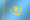

O que é a Fúria?
A Fúria é uma organização brasileira de E-sports, fundada em 2017 por Jaime Pádua, André Akkari e Cris Guedes.
Fúria no Counter Strike 2
A Fúria vive um dos seus mementos mais vitoriosos em sua história no Counter Strike 2. Após um 2025 dominate, a Fúria alcançou o topo do ranking mundial da HLTV pela primeira vez, e possui 1 medalha de Mvp.
Atual elenco da Fúria de Counter Strike 2
Clique para ver o elenco da Fúria
- Fallen
- Kscerato
- Yuurih
- Yekindar
-

Molodoy - Sidde - Coach